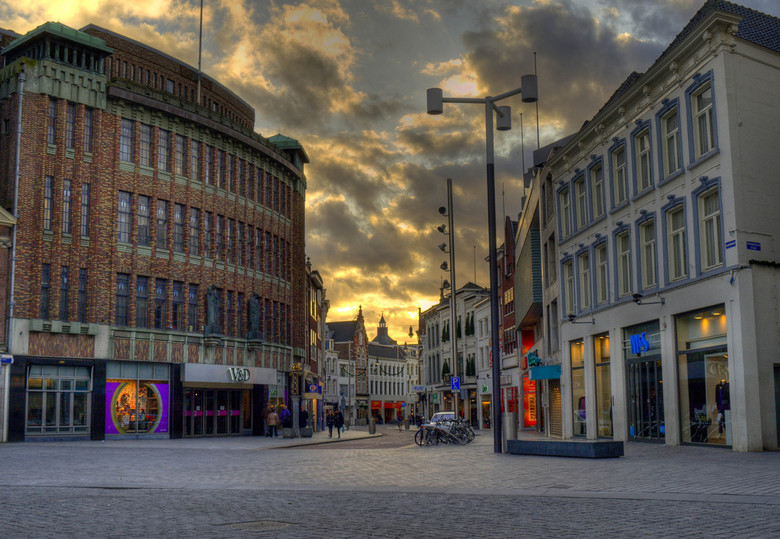

Wandelroute winkels  Kijkt u in de Vughterstraat ook naar de winkels: Oerwoud Daily Poetry Koekwous En in de Fonteinstraat naar de winkels: Lott Gioielli Hello Den Bosch Voor meer info bekijk Winkelen Please enable JavaScript to view the comments powered by Disqus.